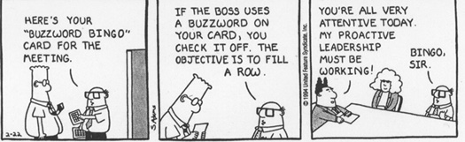
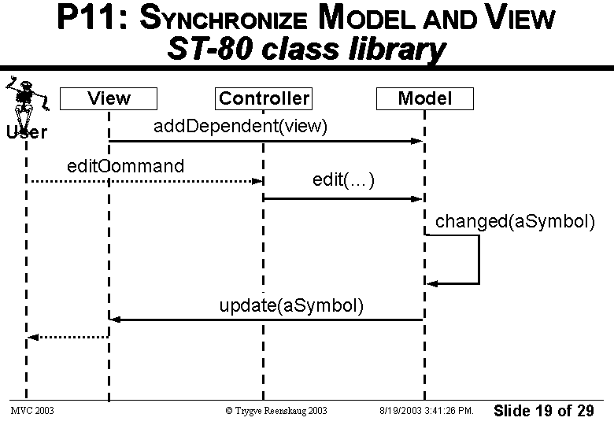
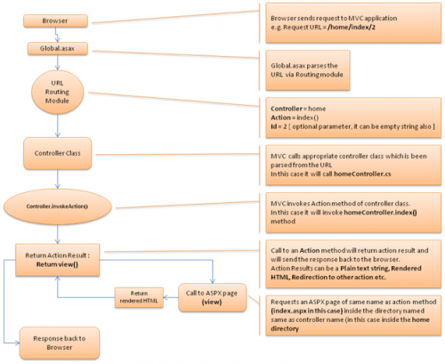
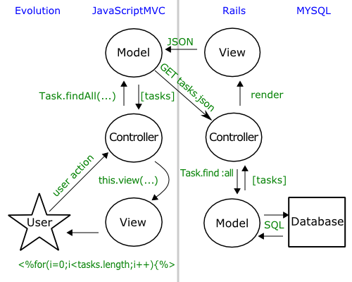

MVC
Back to Basics


Michael Mann
Sr. Software Engineer
Red Rocket Solutions
Sr. Software Engineer
Red Rocket Solutions
Why am I Doing this Presentation

When I started with ASP.NET MVC I heard buzzwords like testable, seperation of concerns, convention over configuration, and I appreciated and embraced those buzzwords, but I did not have a firm grasp of what the MVC pattern really was.
Questions?

Tools of the Trade

- ASP.NET MVC2
- Web Forms View Engine
- .NET 3.5
- AutoFac 2.4.5
- jquery v1.4.1
- jquery.rating plugin
In the Beginning
- University of Oslo Professor Trygve M. H. Reenskaug documented the terms MVC while visiting the Smalltalk group at Xerox PARC in 1978
- Smalltalk included an implementation of MVC as a result of Trygve M. H. Reenskaug’s work
- Several whitepapers where written on the subject including
- THING-MODEL-VIEW-EDITOR - An Example of a planning system
- MODELS - VIEWS - CONTROLLERS
- The Model-View-Controller (MVC). - Its Past and Present
- Applications Programming in Smalltalk-80(TM): How to use Model-View-Controller (MVC)
- The intent of MVC was to capture a representation of the users mental model of the domain
- Naked objects was a design pattern established in 2004 by Richard Pawson that took MVC to the next level
MVC Pattern Communication

MVC Pattern Definition of Terms
- Model - Holds the user’s object model with its information and behaviour, reflecting the user’s mental model of the domain. Model is responsible for informing the view when its state changes.
- View - Capable of showing one or more pictorial representations of the Model.
- Controller - Receives user input, translates it into the appropriate messages and pass these messages on to one or more of the views or to the Model if a state change is warranted
ASP.NET MVC Communication

ASP.NET MVC Definition of Terms
- Model
- View models have become king recently where the model is primarily a container for data
- Models do not communicate state changes to the View
- Models are provided by the controller to the View
- View
- The View is divided into two parts namely the View Engine and the ViewPage
- The View can be bound to a model but it is not required.
- The View can be composed of multiple views called Partials
- Use of DisplayFor and EditorFor makes use of Partials to customize the view for the model
- Controller
- Controller actions receives requests through the routing engine
- The DefaultModelBinder translates parameters of the request into the arguments of the action method
- You can write your own custom model binders
- Responsible for determining what happens next in terms of the ActionResult returned
But What About Javascript Heavy Apps

Supplimenting ASP.NET MVC with other Tools
- Due to the execution boundry between the client and the server you may need MVC on the client
- Knockout.js is a javascript framework that implements MVVM on the client
- Backbone.js seems to be a MVC framework without the C
- JavascriptMVC is what is says it is